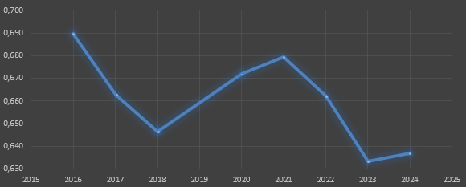

Средние значения NBR во временной выборке

Краткая характеристика индекса
Индекс NBR (Normalized Burn Ratio) имеет значения от -1 до 1, то есть значения близкие к 1 отображают здоровую растительность, а те значения, что стремяться к 0 отображают поврежденную или мертвую растительность. Тем самым можно сказать, что полигоны имеющие значения индекса близкие к нулю могут отображать поврежденные лесные насаждения. Это объясняется тем, использование SWIR диапазона делает индекс более чувствительным к содержанию влаги в растительности, что позволяет выявлять водный стресс деревьев на ранних стадиях, до появления видимых признаков усыхания.